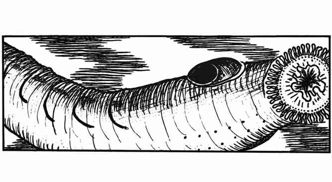

七鳃鳗 · Lamprey

| 体型 | 遭遇 | 护甲等级 | 移动力 | 生命骰 | 攻击／伤害 | 特殊攻击 |
|---|---|---|---|---|---|---|
| 普通 | 不常见；1–2 | 7 | 12 寸 | 1+2 | 1 次；1–2 | 吸血 |
| 巨型 | 罕见；1–4 | 6 | 9 寸 | 5 | 1 次；1–6 | 吸血 |
两者均无巢穴与财宝，魔法抗性标准，智力非智能，阵营中立，灵能无；普通七鳃鳗体型 S，巨型七鳃鳗体型 M。两者均无特殊防御。
七鳃鳗是类似水蛭的鳗鱼，栖居在淡水与海水中，但不会进入浅水域。它们咬住受害者，以环绕尖齿的括约肌状口器牢牢吸附。附着后，从下一个近战轮开始，每轮持续吸血；吸血量相当于其每颗生命骰造成 2 点伤害。因此，巨型个体每轮吸血造成 10 点伤害。